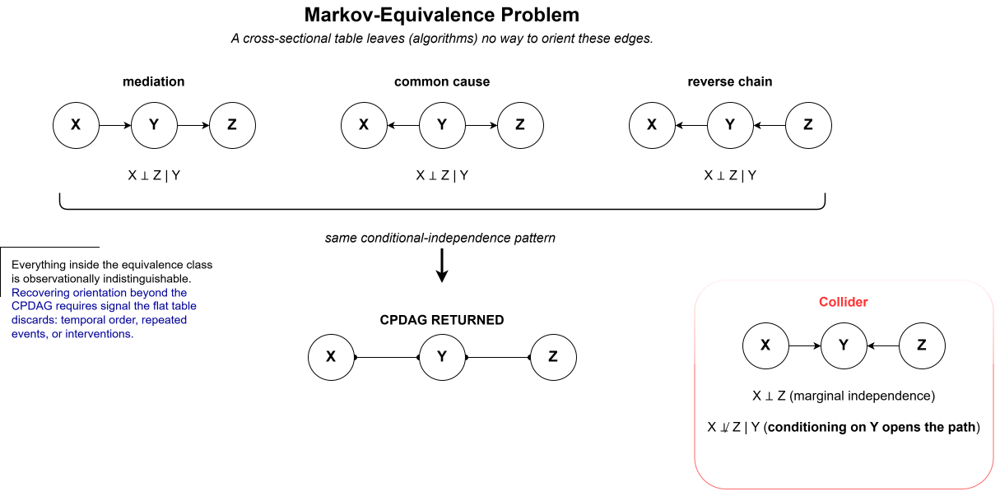

1 · The stall
Classic causal discovery can identify ambiguity correctly.
When EHR data are flattened into one row per patient, clinically different stories can imply the same conditional-independence pattern. The honest output is then a CPDAG: an equivalence class with edges that remain unoriented.
Poster wording: flat tables ask the algorithm to recover clinical time after we have thrown clinical time away.
